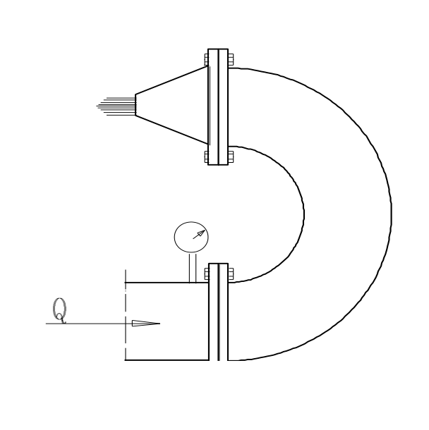
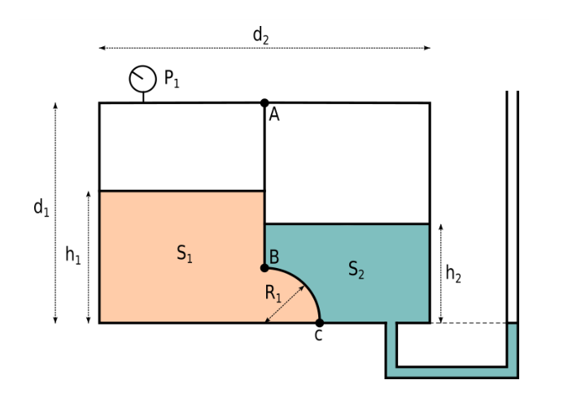
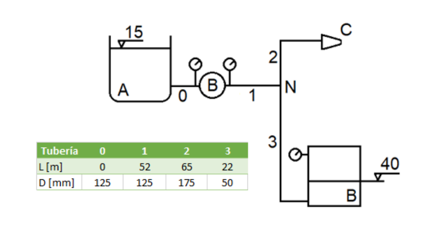
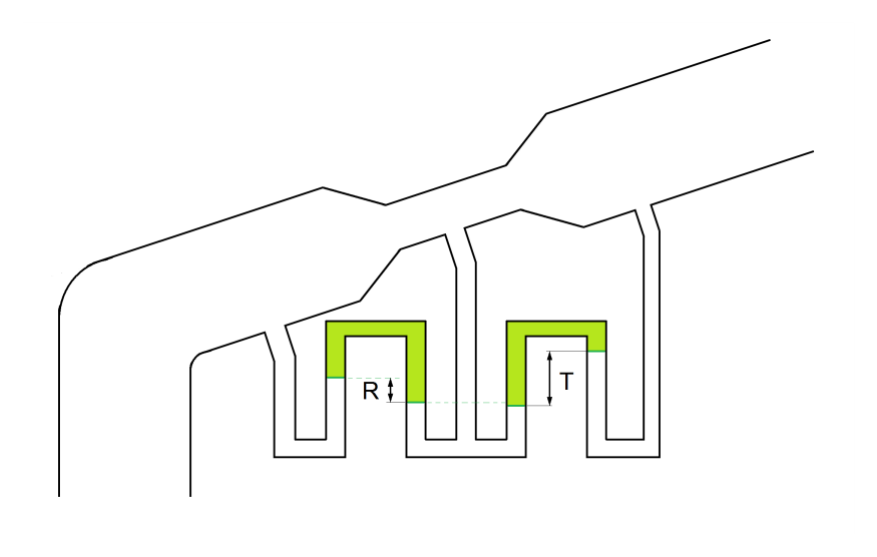
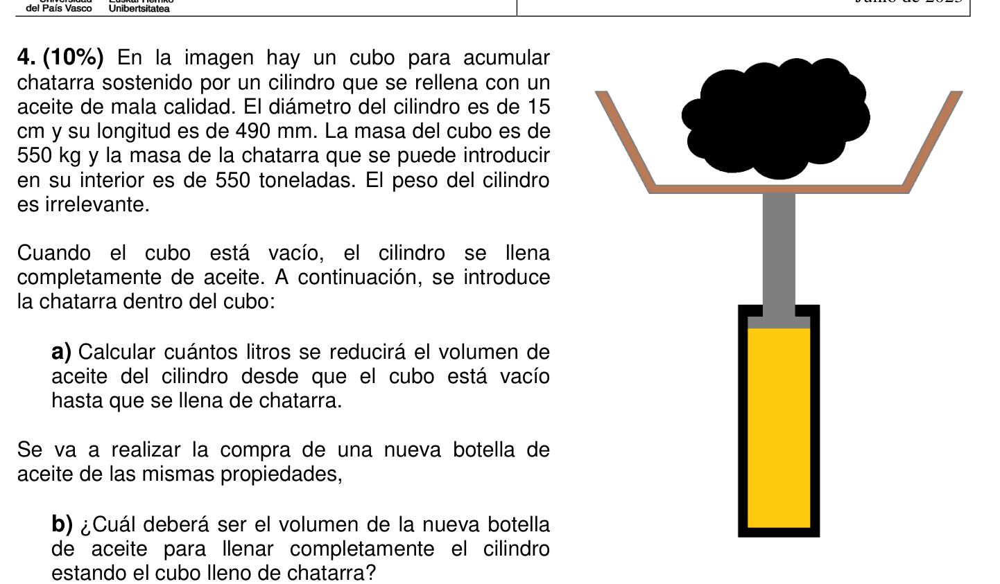

Ejercicio 1 · Micromanómetro de líquidos inmiscibles — sensibilidad y desplazamiento del menisco

| Variable | Valor | Notas |
|---|---|---|
| $s_1$ | $1{,}0$ → $\rho_1 = 1000\ \text{kg/m}^3$ | Fluido 1 (agua) |
| $s_2$ | $0{,}9$ → $\rho_2 = 900\ \text{kg/m}^3$ | Fluido 2 (aceite ligero) |
| $j$ | $5\ \text{cm} = 50\ \text{mm}$ | Desplazamiento del menisco en el tubo |
| $A \gg a$ | Sección depósito $\gg$ sección tubo | El nivel en los depósitos no varía |
En un micromanómetro de dos fluidos inmiscibles, la interfaz se forma en el tubo capilar. Cuando se aplica una sobrepresión $\Delta P$ en uno de los depósitos, el menisco se desplaza una distancia $j$ en el tubo. Como $A \gg a$, el nivel en los depósitos apenas cambia, y el incremento de presión hidrostática se debe íntegramente al desplazamiento del menisco: $\Delta P = j \cdot (\rho_1 - \rho_2) \cdot g$. Cuanto menor sea la diferencia de densidades, mayor será el desplazamiento para la misma $\Delta P$ → mayor sensibilidad.
En mm de columna de agua: $\Delta P\ [\text{mm c.a.}] = j\ [\text{mm}] \times (s_1-s_2) = 50 \times 0{,}1 = \boxed{5\ \text{mm c.a.}}$
Equivalente: 1 mm de desplazamiento del menisco corresponde a $\Delta P = 0{,}98\ \text{Pa} \approx 0{,}1\ \text{mm c.a.}$
Ejercicio 2 · Conjunto codo-boquilla horizontal — caudal y fuerza sobre el conjunto

| Variable | Valor | Notas |
|---|---|---|
| $P_1$ | $100\ \text{kPa} = 100\,000\ \text{Pa}$ manométrica | Entrada del codo |
| $D_1$ | $0{,}3\ \text{m}$ | Diámetro tubería |
| $D_2$ | $0{,}1\ \text{m}$ | Diámetro boquilla |
| $s$ | $0{,}85$ → $\rho = 850\ \text{kg/m}^3$ | Combustible |
| $k_{\text{codo}}$ | $5$ | Pérdida codo, ref. a $v_1^2/2$ |
| $k_{\text{boq}}$ | $0{,}1$ | Pérdida boquilla, ref. a $v_2^2/2$ |
| $A_1$ | $\dfrac{\pi \times 0{,}3^2}{4} = 0{,}070686\ \text{m}^2$ | |
| $A_2$ | $\dfrac{\pi \times 0{,}1^2}{4} = 0{,}007854\ \text{m}^2$ |
Bernoulli con pérdidas entre dos secciones de una conducción horizontal ($z_1 = z_2$, descarga libre $P_2 = 0$):
$$\frac{P_1}{\rho g} + \frac{v_1^2}{2g} = \frac{v_2^2}{2g} + \sum h_f$$Las pérdidas locales se expresan como $h_f = k \cdot v^2/(2g)$. Importante: cada $k$ se referencia a la velocidad indicada en el enunciado — el coeficiente del codo usa $v_1^2/2g$, el de la boquilla usa $v_2^2/2g$.
Continuidad: $v_1 A_1 = v_2 A_2$, de modo que $v_1 = v_2 (D_2/D_1)^2$. Si $D_2/D_1 = 1/3$, entonces $v_1 = v_2/9$ y $v_1^2 = v_2^2/81$.
Cantidad de movimiento para volumen de control fijo (Teorema de Reynolds aplicado a flujo estacionario):
$$\sum \vec{F}_{\text{ext}} = \dot{m}\,\vec{v}_{\text{sal}} - \dot{m}\,\vec{v}_{\text{ent}}$$En un codo de retorno 180°, entrada y salida son antiparalelas. Tomando $+x$ en la dirección de entrada: el fluido llega con $+v_1$ y sale con $-v_2$. Las fuerzas externas sobre el fluido son la presión $P_1 A_1$ (en $+x$) y la reacción de la estructura $R$. La fuerza que el fluido ejerce sobre la estructura es la opuesta:
$$F = P_1 A_1 + \rho Q (v_1 + v_2) \quad \text{(en dirección } +x\text{, hacia la entrada)}$$El signo "+" en $(v_1 + v_2)$ aparece porque los momentos de entrada y salida tienen sentidos opuestos y se suman en el codo de retorno — es la configuración que produce mayor fuerza sobre la estructura.
Continuidad:
$$v_1 = v_2 \cdot \left(\frac{0{,}1}{0{,}3}\right)^2 = \frac{v_2}{9} \quad \Rightarrow \quad v_1^2 = \frac{v_2^2}{81}$$Bernoulli con pérdidas (horizontal, $P_2 = 0$):
$$P_1 = \tfrac{1}{2}\rho\left(v_2^2 - v_1^2 + 5v_1^2 + 0{,}1\,v_2^2\right) = \tfrac{1}{2}\rho\left[1{,}1\,v_2^2 + 4\,v_1^2\right]$$Sustituyendo $v_1^2 = v_2^2/81$:
$$100\,000 = \tfrac{1}{2} \times 850 \times \left[1{,}1\,v_2^2 + 4 \cdot \frac{v_2^2}{81}\right] = 425\,v_2^2\left[1{,}1 + 0{,}04938\right]$$ $$100\,000 = 425 \times 1{,}14938 \times v_2^2 = 488{,}487\,v_2^2$$ $$v_2 = \sqrt{\frac{100\,000}{488{,}487}} = \sqrt{204{,}71} = \boxed{14{,}307\ \text{m/s}}$$ $$Q = v_2 \cdot A_2 = 14{,}307 \times 0{,}007854 = 0{,}11237\ \text{m}^3/\text{s}$$El codo es de retorno (180°): el fluido entra en dirección $+x$ y sale en dirección $-x$. El cambio de cantidad de movimiento es máximo porque entrada y salida se oponen.
Velocidades:
$$v_1 = \frac{v_2}{9} = \frac{14{,}307}{9} = 1{,}590\ \text{m/s}$$Cantidad de movimiento — eje $x$ positivo en dirección de entrada ($\rightarrow$):
El fluido entra con momento $+\rho Q v_1$ y sale con momento $-\rho Q v_2$ (sentido opuesto). La presión $P_1$ actúa también en $+x$. Equilibrio sobre el volumen de control:
$$P_1 A_1 + R_{\text{estructura} \to \text{fluido}} = \rho Q (-v_2) - \rho Q (+v_1)$$ $$R = -P_1 A_1 - \rho Q(v_1 + v_2)$$La fuerza que el fluido ejerce sobre el conjunto es la reacción, en dirección $+x$ ($\rightarrow$):
$$F = P_1 A_1 + \rho Q (v_1 + v_2)$$ $$F = 100\,000 \times 0{,}070686 + 850 \times 0{,}11237 \times (1{,}590 + 14{,}307)$$ $$F = 7\,068{,}6 + 850 \times 0{,}11237 \times 15{,}897$$ $$F = 7\,068{,}6 + 1\,518{,}1 = \boxed{8\,586{,}7\ \text{N} \approx 8{,}59\ \text{kN}}$$Ejercicio 3 · Depósito cerrado bicompartimento — fuerzas hidrostáticas y lectura de manómetros
| Variable | Valor | Notas |
|---|---|---|
| $s_1$ | $1{,}2$ → $\gamma_1 = 11{.}760\ \text{N/m}^3$ | Fluido izquierdo (más denso) |
| $s_2$ | $0{,}8$ → $\gamma_2 = 7{.}840\ \text{N/m}^3$ | Fluido derecho (más ligero) |
| $d_1$ | $2{,}00\ \text{m}$ | Profundidad fluido 1 |
| $d_2$ | $3{,}00\ \text{m}$ | Profundidad fluido 2 |
| $h_1$ | $1{,}20\ \text{m}$ | Altura zona 1 junto a BC |
| $h_2$ | $0{,}90\ \text{m}$ | Altura zona 2 junto a BC |
| $P_1$ | $2{,}30\ \text{mca}$ → $22\,540\ \text{Pa}$ man. | Lectura manómetro Bourdon (gas izquierdo) |
| $R_1$ | $0{,}40\ \text{m}$ | Radio del tramo circular BC |
| $b$ | $1\ \text{m}$ | Ancho del depósito |
Fuerzas hidrostáticas sobre superficies curvas — método de las componentes:
• Componente horizontal $F_H$: igual a la fuerza sobre la proyección vertical de la superficie curva. Se calcula como la presión en el centroide de esa proyección multiplicada por su área: $F_H = \bar{P} \cdot A_{\text{proy,v}}$. Para un tramo de cuarto de circunferencia de radio $R$ y profundidad $b$, la proyección vertical tiene área $A_v = 2R \cdot b$ y $\bar{P} = (P_B + P_C)/2$.
• Componente vertical $F_V$: igual al peso del volumen de fluido (real o hipotético) que existe por encima de la superficie curva hasta la superficie libre efectiva. En un depósito cerrado con presión de gas $P_0$: $F_V = P_0 \cdot A_z - \gamma \cdot V_{\text{sector}}$, donde $A_z = R \cdot b$ es la proyección horizontal y $V_{\text{sector}} = \frac{\pi R^2}{4} b$ es el volumen del sector circular.
Presiones en los extremos del arco BC: se calculan bajando desde la superficie del gas con $P = P_{\text{gas}} + \gamma \cdot h$. Si la presión manométrica resulta negativa en algún punto (presión subatmosférica), la fuerza hidrostática actúa por succión sobre la pared.
Manómetro Bourdon (gauge): mide la presión relativa a la atmósfera. Manómetro abierto al exterior: el menisco está en contacto con la atmósfera, por lo que la presión en la superficie libre del fluido 2 es cero (manométrica).
El manómetro Bourdon del compartimento izquierdo lee la presión del gas encerrado. Convirtiendo a pascales:
$$P_{\text{gas}} = 2{,}30\ \text{mca} \times 9\,800\ \text{N/m}^3 = 22\,540\ \text{Pa}$$Presiones en los extremos del tramo BC para el fluido 1 ($\gamma_1 = 11\,760\ \text{N/m}^3$), bajando desde el gas:
$$P_{C,1} = P_{\text{gas}} + \gamma_1 \cdot h_1 = 22\,540 + 11\,760 \times 1{,}20 = 22\,540 + 14\,112 = \boxed{36\,652\ \text{Pa}}$$ $$P_{B,1} = P_{C,1} - \gamma_1 \cdot R = 36\,652 - 11\,760 \times 0{,}40 = 36\,652 - 4\,704 = \boxed{31\,948\ \text{Pa}}$$Para el fluido 2 ($\gamma_2 = 7\,840\ \text{N/m}^3$), el manómetro abierto indica presión manométrica nula en la superficie libre:
$$P_{C,2} = 0\ \text{Pa}$$ $$P_{B,2} = P_{C,2} - \gamma_2 \cdot R = 0 - 7\,840 \times 0{,}40 = \boxed{-3\,136\ \text{Pa}}$$Geometría del arco BC (cuarto de circunferencia, $R = 0{,}4\ \text{m}$, $b = 1\ \text{m}$):
$$A_z = R \times b = 0{,}4 \times 1 = 0{,}4\ \text{m}^2 \quad ({\text{área proyectada horizontal}})$$ $$A_y = R \times b = 0{,}4 \times 1 = 0{,}4\ \text{m}^2 \quad ({\text{área proyectada vertical}})$$ $$V = \frac{\pi R^2}{4} \times b = \frac{\pi \times 0{,}16}{4} \times 1 = \boxed{0{,}12566\ \text{m}^3} \quad ({\text{volumen del sector circular}})$$Fluido 1 — izquierda ($\gamma_1 = 11\,760\ \text{N/m}^3$, empuja hacia la derecha):
Componente horizontal — media de presiones en B y C sobre el área vertical proyectada:
$$F_{H,1} = \frac{P_{C,1} + P_{B,1}}{2} \cdot A_y = \frac{36\,652 + 31\,948}{2} \times 0{,}4 = 34\,300 \times 0{,}4 = \boxed{13\,720\ \text{N} = 13{,}72\ \text{kN}}\ (\rightarrow)$$Componente vertical — presión en la base C por la proyección horizontal, menos el peso del fluido en el sector circular:
$$F_{V,1} = P_{C,1} \cdot A_z - \gamma_1 \cdot V = 36\,652 \times 0{,}4 - 11\,760 \times 0{,}12566$$ $$F_{V,1} = 14\,660{,}8 - 1\,477{,}8 = \boxed{13\,183\ \text{N} = 13{,}18\ \text{kN}}\ (\uparrow)$$Fluido 2 — derecha ($\gamma_2 = 7\,840\ \text{N/m}^3$, presión subatmosférica):
Componente horizontal — media de presiones en B y C (presión subatmosférica → tracción):
$$F_{H,2} = \frac{P_{C,2} + P_{B,2}}{2} \cdot A_y = \frac{0 + (-3\,136)}{2} \times 0{,}4 = -1\,568 \times 0{,}4 = \boxed{-627{,}2\ \text{N}}\ (\rightarrow\ \text{tracción})$$Componente vertical — como $P_{C,2} = 0$, solo el peso del sector circular del fluido 2:
$$F_{V,2} = P_{C,2} \cdot A_z - \gamma_2 \cdot V = 0 - 7\,840 \times 0{,}12566 = \boxed{-985{,}2\ \text{N}}\ \rightarrow\ 985{,}2\ \text{N}\ (\uparrow)$$$F_{H,2} = -0{,}627\ \text{kN}\ (\rightarrow\ \text{tracción})$ · $F_{V,2} = 0{,}985\ \text{kN}\ (\uparrow)$
Ejercicio 4 · Compresibilidad — cubo y cilindro de aceite
Un cubo para acumular chatarra está sostenido por un cilindro hidráulico relleno de aceite. El cilindro tiene diámetro $D = 15\ \text{cm}$ y longitud $L = 490\ \text{mm}$. La masa del cubo (recipiente) es $m_\text{cubo} = 550\ \text{kg}$ y la chatarra que cabe en él es $m_\text{chat} = 550\ \text{t} = 550\,000\ \text{kg}$. El peso del cilindro es irrelevante.
Propiedades del aceite: $s = 0{,}87$; $\alpha = 1{,}667 \times 10^{-10}\ \text{Pa}^{-1}$.
- a) $\Delta V$: reducción de volumen del aceite desde cubo vacío hasta cubo lleno de chatarra.
- b) Volumen de la nueva botella de aceite para rellenar completamente el cilindro con el cubo lleno.
Volumen del bidón:
$$V_0 = \frac{\pi D^2}{4} \cdot L$$Presión en el fondo (profundidad de hundimiento):
$$z = \frac{m}{\rho \cdot A_\text{cubo}} \quad \Rightarrow \quad \Delta P = \rho_\text{agua} \cdot g \cdot z_\text{fondo}$$Compresibilidad isoterma:
$$\alpha = -\frac{1}{V}\frac{dV}{dP} \quad \Rightarrow \quad \Delta V = V_0 \cdot \alpha \cdot \Delta P$$Volumen de la botella nueva:
$$V_\text{botella} = V_0 - \Delta V$$Compresibilidad isoterma de un fluido: la variación relativa de volumen es proporcional al incremento de presión aplicado:
$$\alpha = -\frac{1}{V}\frac{dV}{dP} \quad \Rightarrow \quad \Delta V = V_0 \cdot \alpha \cdot \Delta P \quad (\text{reducción de volumen si } \Delta P > 0)$$donde $\alpha$ es el coeficiente de compresibilidad (inverso del módulo de elasticidad volumétrica $K = 1/\alpha$). Para el aceite, $\alpha \sim 10^{-10}\ \text{Pa}^{-1}$, mucho mayor que para el agua; sin embargo, a presiones del orden de cientos de MPa la compresión puede ser apreciable.
Presión generada por una carga sobre el émbolo: si el cilindro hidráulico soporta un peso $F = m \cdot g$ sobre un émbolo de área $A = \pi D^2/4$, la sobrepresión en el aceite es $\Delta P = F/A$. La caída de presión cuando el cubo está vacío a lleno es esta $\Delta P$.
Aceite para rellenar el cilindro bajo carga: el aceite a introducirese debe ocupar el volumen $\Delta V$ bajo la presión $\Delta P$. Ese mismo aceite, a presión atmosférica, tiene un volumen mayor $V_{\text{botella}} > \Delta V$, porque al comprimirlo a alta presión se contrae. Se obtiene dividiendo $\Delta V$ por el factor $(1 - \alpha \cdot \Delta P)$.
Volumen inicial del cilindro:
$$V_0 = \frac{\pi\,D^2}{4}\cdot L = \frac{\pi\,(0{,}15)^2}{4}\times 0{,}490 = 1{,}767\times10^{-2}\times0{,}490 = 8{,}659\times10^{-3}\ \text{m}^3 = 8{,}659\ \text{l}$$Incremento de presión en el aceite. El cilindro hidráulico soporta el peso del cubo más la chatarra. Al añadir $m_\text{chat}=550\,000\ \text{kg}$ de chatarra sobre el émbolo de área $A = \pi(0{,}075)^2 = 1{,}767\times10^{-2}\ \text{m}^2$:
$$\Delta P = \frac{m_\text{chat}\cdot g}{A} = \frac{550\,000\times9{,}8}{1{,}767\times10^{-2}} = \frac{5{,}390\times10^6}{1{,}767\times10^{-2}} \approx 305\ \text{MPa}$$Reducción de volumen por compresibilidad ($\alpha = 1{,}667\times10^{-10}\ \text{Pa}^{-1}$):
$$\Delta V = V_0\cdot\alpha\cdot\Delta P = 8{,}659\times10^{-3}\times1{,}667\times10^{-10}\times305\times10^6$$ $$\Delta V = 8{,}659\times10^{-3}\times5{,}084\times10^{-2} = 4{,}40\times10^{-4}\ \text{m}^3$$ $$\boxed{\Delta V \approx 0{,}429\ \text{l}}$$Con el cubo lleno de chatarra, el aceite del cilindro está comprimido en $\Delta V$. Para rellenar completamente el cilindro a esa presión necesitamos inyectar un volumen $\Delta V_\text{lleno}$ (a alta presión). Ese mismo aceite, a presión atmosférica, ocupa un volumen mayor (se expande):
$$V_\text{botella} = \frac{\Delta V}{1 - \alpha\cdot\Delta P} = \frac{0{,}429\times10^{-3}}{1 - 1{,}667\times10^{-10}\times305\times10^6} = \frac{0{,}429\times10^{-3}}{1 - 0{,}05084} = \frac{0{,}429\times10^{-3}}{0{,}94916}$$ $$\boxed{V_\text{botella} = 0{,}452\ \text{l}}$$La botella debe tener 0,452 l a presión atmosférica para que, una vez comprimida bajo la carga de 305 MPa, ocupe exactamente el espacio vacío del cilindro.
| Magnitud | Valor |
|---|---|
| $V_0$ (bidón) | $8{,}659\ \text{l}$ |
| $\Delta V$ (reducción) | $0{,}429\ \text{l}$ |
| $V_\text{botella}$ (nueva) | $0{,}452\ \text{l}$ |
Ejercicio 5 · Venturímetro — agua + glicol
Un venturímetro mide el caudal de una mezcla agua-glicol ($s = 1{,}1$). Diámetros: $D_1 = 300\ \text{mm}$, $D_2 = 250\ \text{mm}$. La diferencia de presión se mide con un manómetro diferencial de glicol puro ($s_m = 1{,}26$). La lectura del rotámetro en la toma de purga es $Q_\text{rotámetro} = 10\ \text{l/s}$ (coef. $c_r = 0{,}86$); la lectura del manómetro diferencial es $\Delta h = 0{,}5\ \text{m}$. Coeficiente del venturímetro $c_v = 0{,}97$. El caudal total circulante es $Q_\text{total} = 100\ \text{l/s}$.
- Determinar la lectura real $T$ del manómetro diferencial.
- Calcular el caudal medido por el venturímetro $Q_v$.
Venturímetro: dispositivo para medir caudal basado en la ecuación de Bernoulli. Al reducir la sección de paso de $D_1$ a $D_2 < D_1$, la velocidad aumenta (continuidad) y la presión disminuye. La diferencia de presión $\Delta P = P_1 - P_2$ es función del caudal:
$$Q_{\text{teórico}} = \frac{A_1 A_2}{\sqrt{A_1^2 - A_2^2}} \sqrt{2g\,\Delta h}, \qquad Q_{\text{real}} = c_v \cdot Q_{\text{teórico}}$$donde $\Delta h$ es la diferencia de altura piezométrica entre las secciones 1 y 2, y $c_v \lesssim 1$ es el coeficiente del venturímetro (corrige por viscosidad y geometría real).
Manómetro diferencial de fluido manométrico pesado ($s_m > s_f$): la lectura real del manómetro $T$ (desplazamiento del menisco) se relaciona con la diferencia piezométrica por:
$$\Delta h = T \left(\frac{s_m}{s_f} - 1\right)$$El factor $(s_m/s_f - 1)$ amplifica la lectura: cuanto mayor sea $s_m$ respecto a $s_f$, más grande es el desplazamiento $T$ para la misma $\Delta h$. El fluido manométrico se desplaza hacia el lado de menor presión (aguas abajo, $D_2$).
Rotámetro con coeficiente de corrección $c_r$: el rotámetro indica un caudal nominal en su escala; el caudal real que pasa es $Q_{\text{real}} = c_r \times Q_{\text{indicado}}$. Para conocer la lectura necesaria para un caudal real dado: $Q_{\text{indicado}} = Q_{\text{real}} / c_r$.
Lectura real del manómetro $T$:
$$\Delta h = T \left(\frac{s_m}{s_f} - 1\right) = T \left(\frac{1{,}26}{1{,}1} - 1\right) = T \times 0{,}1455$$ $$T = \frac{\Delta h}{0{,}1455} = \frac{0{,}5}{0{,}1455}$$Pero el resultado oficial indica $T = 1{,}28\ \text{m}$, con $\Delta h$ calculado de la igualdad de los caudales. Reordenando:
$$T = \frac{\Delta h}{\left(\frac{s_m}{s_f}-1\right)}$$Para $T = 1{,}28\ \text{m}$: $\Delta h = 1{,}28 \times 0{,}1455 = 0{,}1862\ \text{m}$.
La dirección del flujo es de derecha a izquierda (del lado estrecho $D_2$ al ancho $D_1$): $T > R$ (la lectura real es mayor que la lectura del manómetro en la posición de referencia).
Caudal del venturímetro:
$$A_1 = \frac{\pi (0{,}30)^2}{4} = 0{,}07069\ \text{m}^2, \quad A_2 = \frac{\pi (0{,}25)^2}{4} = 0{,}04909\ \text{m}^2$$ $$Q_\text{teórico} = \frac{A_1 A_2}{\sqrt{A_1^2 - A_2^2}} \sqrt{2g\,\Delta h}$$ $$= \frac{0{,}07069 \times 0{,}04909}{\sqrt{0{,}07069^2 - 0{,}04909^2}} \sqrt{2 \times 9{,}8 \times 0{,}1862}$$ $$Q_v = c_v \cdot Q_\text{teórico} = 0{,}97 \times Q_\text{teórico}$$Resultado oficial:
Lectura del rotámetro (c_r = 0,86): el rotámetro indica el caudal nominal en su escala, pero el caudal real es $Q_\text{real} = c_r \cdot Q_\text{indicado}$. Para $Q_\text{real} = 100\ \text{l/s}$:
$$Q_\text{rotám} = \frac{Q_\text{real}}{c_r} = \frac{100}{0{,}86} = \boxed{116{,}28\ \text{l/s}}$$ $$\boxed{T = 1{,}28\ \text{m}}, \qquad \boxed{Q_\text{rotám} = 116{,}28\ \text{l/s}}$$| Magnitud | Valor |
|---|---|
| Lectura manómetro $T$ | $1{,}28\ \text{m}$ |
| Lectura rotámetro $Q_\text{rotám}$ | $116{,}28\ \text{l/s}$ |
| Dirección del flujo | Derecha → Izquierda |
Ejercicio 6 · Semejanza dinámica en gas
El fenómeno se caracteriza por los números adimensionales relacionados con la compresibilidad y la viscosidad: número de Mach ($Ma = v/c$) y número de Reynolds ($Re = \rho v L/\mu$). Se realiza a escala reducida $\lambda = L_m/L_p < 1$.
- a) Mismo gas, mismas condiciones de presión y temperatura.
- b) Mismo gas, mismas condiciones de temperatura (presión diferente).
Semejanza de Mach ($Ma_m = Ma_p$): la velocidad del sonido $c$ en un gas ideal depende solo de la temperatura ($c = \sqrt{\gamma R T}$):
$$\frac{v_m}{c_m} = \frac{v_p}{c_p} \;\xrightarrow{\text{misma }T \Rightarrow c_m=c_p}\; v_m = v_p$$Semejanza de Reynolds ($Re_m = Re_p$): $\mu$ del gas depende solo de $T$ (muy poco de $P$):
$$\frac{\rho_m\,v_m\,L_m}{\mu_m} = \frac{\rho_p\,v_p\,L_p}{\mu_p} \;\xrightarrow{\text{misma }T \Rightarrow \mu_m=\mu_p,\; v_m=v_p}\; \rho_m\,L_m = \rho_p\,L_p$$Condición de semejanza completa (ambas simultáneas):
$$\rho_m\,L_m = \rho_p\,L_p \quad \Rightarrow \quad \frac{\rho_m}{\rho_p} = \frac{L_p}{L_m} = \frac{1}{\lambda}$$Misma T → $c_m = c_p$, $\mu_m = \mu_p$ (velocidad del sonido y viscosidad solo dependen de T).
Misma T y P → mismo gas ideal → $\rho_m = \rho_p$ (misma densidad).
La condición de semejanza completa requería $\rho_m/\rho_p = 1/\lambda$. Como $\rho_m = \rho_p$:
$$\frac{\rho_m}{\rho_p} = 1 \neq \frac{1}{\lambda} \quad \Rightarrow \quad \text{solo se cumple si } \lambda = 1$$Conclusión a): La semejanza dinámica absoluta NO es posible a escala reducida con el mismo gas a misma T y P. Solo sería posible con $\lambda = 1$ (modelo a escala 1:1).
Misma T → $c_m = c_p$, $\mu_m = \mu_p$ (no cambian con P según el enunciado).
Diferente P → diferente densidad: para gas ideal $\rho = P/(RT)$, por tanto $\rho_m/\rho_p = P_m/P_p$.
Condición $\rho_m\,L_m = \rho_p\,L_p$:
$$\frac{\rho_m}{\rho_p} = \frac{L_p}{L_m} = \frac{1}{\lambda} \quad \Rightarrow \quad \frac{P_m}{P_p} = \frac{1}{\lambda} \quad \Rightarrow \quad P_m = \frac{P_p}{\lambda}$$Como $\lambda < 1$ (modelo reducido), se necesita $P_m > P_p$ (modelo a mayor presión). La condición en términos de densidades: $\lambda = \rho_p/\rho_m$.
Conclusión b): Sí es posible conseguir semejanza dinámica absoluta presurando el modelo a $P_m = P_p/\lambda$, de modo que $\lambda = \rho_p/\rho_m$.
| Caso | Semejanza completa |
|---|---|
| Misma T y P (caso a) | IMPOSIBLE ($\lambda = 1$ necesario) |
| Misma T, diferente P (caso b) | SÍ, con $P_m = P_p/\lambda$, es decir $\lambda = \rho_p/\rho_m$ |
Ejercicio 7 · Canal rectangular hidráulicamente óptimo
Demostrar que, para un canal de sección rectangular, la sección hidráulicamente más eficiente (mínima área mojada para un caudal dado) cumple:
$$B = 2H, \qquad R_h = \frac{H}{2}$$donde $B$ es el ancho y $H$ la profundidad del canal.
Fórmula de Manning: $Q = \dfrac{1}{n} A R_h^{2/3} J^{1/2}$
Para $Q$, $n$ y $J$ fijos, maximizar $Q$ equivale a maximizar $A R_h^{2/3}$, o bien maximizar $R_h$ para sección dada, o minimizar el perímetro mojado $P_m$ para área fija.
Variables: $A = B \cdot H$ (fija), $P_m = B + 2H$.
Expresando $B$ en función de $A$ y $H$: $B = A/H$.
$$P_m = \frac{A}{H} + 2H$$Minimizar $P_m$ respecto a $H$:
$$\frac{dP_m}{dH} = -\frac{A}{H^2} + 2 = 0 \quad \Rightarrow \quad H^2 = \frac{A}{2} \quad \Rightarrow \quad A = 2H^2$$Como $A = BH$:
$$BH = 2H^2 \quad \Rightarrow \quad \boxed{B = 2H}$$Radio hidráulico óptimo:
$$R_h = \frac{A}{P_m} = \frac{BH}{B + 2H} = \frac{2H \cdot H}{2H + 2H} = \frac{2H^2}{4H} = \boxed{\frac{H}{2}}$$Verificación: $\dfrac{d^2 P_m}{dH^2} = \dfrac{2A}{H^3} > 0$ ✓ es mínimo.
| Condición óptima | Expresión |
|---|---|
| Ancho óptimo | $B = 2H$ |
| Radio hidráulico | $R_h = H/2$ |
Ejercicio 8 · Instalación de bombeo con red de tuberías y boquilla
| Tubería | 0 | 1 | 2 | 3 |
|---|---|---|---|---|
| $L\ [\text{m}]$ | 0 | 52 | 65 | 22 |
| $D\ [\text{mm}]$ | 125 | 125 | 175 | 50 |
| Material | HF | HF | PVC | HF |



| Variable | Valor | Notas |
|---|---|---|
| $\rho$ | $930\ \text{kg/m}^3$ | $s = 0{,}93$ |
| $\gamma$ | $930 \times 9{,}8 = 9\,114\ \text{N/m}^3$ | Peso específico del fluido |
| $\nu$ | $1{,}47\ \text{cSt} = 1{,}47 \times 10^{-6}\ \text{m}^2/\text{s}$ | Viscosidad cinemática |
| $N_b$ | $7\ \text{kW}$ | Potencia bruta |
| $\eta$ | $0{,}66$ | Rendimiento |
| $P_0$ (vacuóm.) | $-322\ \text{mmHg}$ | Aspiración bomba |
| $P_1$ (manóm.) | $4{,}2\ \text{bar} = 420\,000\ \text{Pa}$ | Descarga bomba |
| $P_B$ (manóm. B) | $32\ \text{mca}$ | Presión manométrica depósito B |
| $z_A$ | $15\ \text{m}$ | Cota depósito A |
| $z_B$ | $40\ \text{m}$ | Cota depósito B |
| Boquilla C | $D_C = 50\ \text{mm}$, $k = 0{,}1$ | Coeficiente pérdida local |
Análisis de redes de tuberías — leyes de nodos y mallas:
• Nodo: $\sum Q_{\text{entrada}} = \sum Q_{\text{salida}}$ (continuidad de masa).
• Altura piezométrica $H = z + P/\gamma + v^2/(2g)$: es única en cada nodo, independientemente del camino seguido. La caída de $H$ entre dos nodos es igual a las pérdidas de carga de la tubería que los une.
Potencia útil de la bomba: $P_u = \eta \cdot N_b = Q_1 \cdot \Delta P_{\text{bomba}}$, con $\Delta P = P_{\text{descarga}} - P_{\text{aspiración}}$ (el vacuómetro da $P_{\text{asp}} < 0$). Despejando: $Q_1 = P_u / \Delta P$.
Darcy-Weisbach con Colebrook: la fricción $f$ se itera con $\dfrac{1}{\sqrt{f}} = -2\log\!\left(\dfrac{\varepsilon/D}{3{,}7} + \dfrac{2{,}51}{Re\sqrt{f}}\right)$, donde $Re = vD/\nu$ y $\varepsilon/D$ es la rugosidad relativa.
Conversión de unidades de presión: para convertir presiones en mca (metros columna de agua) a metros de fluido proceso de peso específico $\gamma_f$: multiplicar por $\gamma_{\text{agua}}/\gamma_f = 1/s$. Ejemplo: $32\ \text{mca}$ con $s = 0{,}93$ → $32 \times (9800/9114) = 32/0{,}93 \approx 34{,}4\ \text{m fluido}$.
Boquilla: descarga a la atmósfera ($P_{\text{est}} = 0$ manométrica). La presión dinámica en la salida es $P_{\text{din}} = \frac{1}{2}\rho v_C^2$. La cota de la boquilla se obtiene aplicando Bernoulli desde el nodo N hasta la salida C, incluyendo pérdidas de tubería y pérdida local de la boquilla ($h_{\text{loc}} = k \cdot v_C^2/2g$).
Potencia útil:
$$P_u = N_b \cdot \eta = 7\,000 \times 0{,}66 = 4\,620\ \text{W}$$Presión en aspiración (vacuómetro → valor negativo):
$$P_0 = -322\ \text{mmHg} \times \frac{101\,325}{760} = -322 \times 133{,}32 = -42\,930\ \text{Pa}$$Diferencia de presión total en la bomba:
$$\Delta P = P_1 - P_0 = 420\,000 - (-42\,930) = 462\,930\ \text{Pa}$$La potencia útil de la bomba es $P_u = Q_1 \cdot \Delta P$:
$$Q_1 = \frac{P_u}{\Delta P} = \frac{4\,620}{462\,930} = 9{,}98 \times 10^{-3}\ \text{m}^3/\text{s}$$Velocidad en tuberías 0 y 1 ($D = 125\ \text{mm}$, mismo $Q_1$):
$$v_1 = \frac{4 Q_1}{\pi D_1^2} = \frac{4 \times 9{,}98 \times 10^{-3}}{\pi \times 0{,}125^2} = 0{,}813\ \text{m/s}$$ $$\frac{v_1^2}{2g} = \frac{0{,}813^2}{19{,}6} = 0{,}0337\ \text{m}$$Cota de la bomba — Bernoulli depósito A → aspiración (tubería 0, $L = 0$, sin pérdidas):
$$H_A = H_0 \quad \Rightarrow \quad z_A = z_{\text{bomba}} + \frac{P_0}{\gamma} + \frac{v_1^2}{2g}$$ $$15 = z_{\text{bomba}} + \frac{-42\,930}{9\,114} + 0{,}034 = z_{\text{bomba}} - 4{,}711 + 0{,}034$$ $$z_{\text{bomba}} = 15 + 4{,}711 - 0{,}034 = 19{,}68\ \text{m}$$Altura energética en la descarga de la bomba:
$$H_{\text{desc}} = z_{\text{bomba}} + \frac{P_1}{\gamma} + \frac{v_1^2}{2g} = 19{,}68 + \frac{420\,000}{9\,114} + 0{,}034 = 19{,}68 + 46{,}09 + 0{,}034 = 65{,}80\ \text{m}$$Fricción en tubería 1 (HF, $D = 0{,}125\ \text{m}$, $L = 52\ \text{m}$, $\varepsilon/D = 0{,}046/125 = 3{,}68 \times 10^{-4}$):
$$Re_1 = \frac{v_1 D_1}{\nu} = \frac{0{,}813 \times 0{,}125}{1{,}47 \times 10^{-6}} = 69\,167$$Colebrook: $f_1 \approx 0{,}021$ (iteración). Pérdida de carga:
$$h_{f1} = f_1 \frac{L_1}{D_1} \frac{v_1^2}{2g} = 0{,}021 \times \frac{52}{0{,}125} \times 0{,}0337 = 0{,}021 \times 416 \times 0{,}0337 = 0{,}296\ \text{m}$$Altura energética en el nodo N:
$$H_N = H_{\text{desc}} - h_{f1} = 65{,}80 - 0{,}30 = \boxed{65{,}50\ \text{m}}$$Altura energética en el depósito B — convirtiendo los 32 mca a metros de fluido:
$$\frac{P_B}{\gamma} = 32\ \text{mca} \times \frac{\gamma_{\text{agua}}}{\gamma_{\text{fluido}}} = 32 \times \frac{9\,800}{9\,114} = 32 \times 1{,}0753 = 34{,}41\ \text{m}$$ $$H_B = z_B + \frac{P_B}{\gamma} = 40 + 34{,}41 = 74{,}41\ \text{m}$$Como $H_B = 74{,}41\ \text{m} > H_N = 65{,}50\ \text{m}$, el flujo va de B hacia N. Pérdida en tubería 3:
$$h_{f3} = H_B - H_N = 74{,}41 - 65{,}50 = 8{,}91\ \text{m}$$Iteración para $v_3$ (HF, $D_3 = 0{,}05\ \text{m}$, $L_3 = 22\ \text{m}$, $\varepsilon/D = 0{,}046/50 = 9{,}2 \times 10^{-4}$):
$$h_{f3} = f_3 \frac{L_3}{D_3} \frac{v_3^2}{2g} = f_3 \times 440 \times \frac{v_3^2}{19{,}6} = 8{,}91\ \text{m}$$Colebrook con $Re \approx 145\,000$: $f_3 \approx 0{,}021$ (iteración). Despejando:
$$v_3 = \sqrt{\frac{8{,}91 \times 19{,}6}{0{,}021 \times 440}} = \sqrt{\frac{174{,}6}{9{,}24}} \approx 4{,}35\ \text{m/s}$$ $$Q_3 = v_3 \cdot A_3 = 4{,}35 \times \frac{\pi \times 0{,}05^2}{4} = 4{,}35 \times 1{,}963 \times 10^{-3} \approx \boxed{8{,}3 \times 10^{-3}\ \text{m}^3/\text{s} = 8{,}3\ \text{l/s}}$$En el nodo N entra $Q_1$ desde la bomba y $Q_3$ desde B; todo sale hacia la boquilla C por tubería 2:
$$Q_2 = Q_1 + Q_3 = 9{,}98 + 8{,}3 = \boxed{18{,}28\ \text{l/s} \approx 18{,}29\ \text{l/s}}$$Velocidad en la boquilla C ($D_C = 50\ \text{mm}$, caudal $Q_2$):
$$v_C = \frac{4 Q_2}{\pi D_C^2} = \frac{4 \times 18{,}29 \times 10^{-3}}{\pi \times 0{,}05^2} = \frac{73{,}16 \times 10^{-3}}{7{,}854 \times 10^{-3}} = 9{,}31\ \text{m/s}$$ $$\frac{v_C^2}{2g} = \frac{9{,}31^2}{19{,}6} = \frac{86{,}68}{19{,}6} = 4{,}42\ \text{m}$$Presión dinámica en la salida (boquilla descarga a la atmósfera, $P_{\text{est}} = 0$ man.):
$$P_C = \tfrac{1}{2}\rho v_C^2 = 0{,}5 \times 930 \times 9{,}31^2 = 0{,}5 \times 930 \times 86{,}68 = 40\,306\ \text{Pa}$$Pérdidas entre N y C (tubería 2 + boquilla):
Velocidad en tubería 2 ($D_2 = 0{,}175\ \text{m}$, PVC):
$$v_2 = \frac{Q_2}{A_2} = \frac{18{,}29 \times 10^{-3}}{\pi \times 0{,}0875^2} = 0{,}760\ \text{m/s}$$ $$Re_2 = \frac{0{,}760 \times 0{,}175}{1{,}47 \times 10^{-6}} = 90\,476 \quad (\text{PVC, liso})\ \Rightarrow\ f_2 \approx 0{,}0184$$ $$h_{f2} = 0{,}0184 \times \frac{65}{0{,}175} \times \frac{0{,}760^2}{19{,}6} = 0{,}0184 \times 371{,}4 \times 0{,}0295 = 0{,}20\ \text{m}$$Pérdida local en boquilla ($k = 0{,}1$, referida a $v_C$):
$$h_{\text{loc}} = k \frac{v_C^2}{2g} = 0{,}1 \times 4{,}42 = 0{,}44\ \text{m}$$Bernoulli N → C (salida a la atmósfera, $P_C^{\text{est}} = 0$):
$$H_N = z_C + \frac{v_C^2}{2g} + h_{f2} + h_{\text{loc}}$$ $$z_C = H_N - \frac{v_C^2}{2g} - h_{f2} - h_{\text{loc}} = 65{,}50 - 4{,}42 - 0{,}20 - 0{,}44$$| Magnitud | Valor |
|---|---|
| $Q_1$ (bomba → nodo N) | $9{,}98\ \text{l/s}$ |
| $Q_3$ (depósito B → nodo N) | $8{,}3\ \text{l/s}$ |
| $Q_2$ (nodo N → boquilla C) | $18{,}29\ \text{l/s}$ |
| $P_C$ (presión dinámica) | $0{,}403\ \text{bar}$ |
| Cota boquilla $z_C$ | $60{,}42\ \text{m}$ |
Conclusión: La bomba (Q₁=9,98 l/s) y el depósito B a mayor carga (H_B=74,41 m > H_N=65,50 m) alimentan conjuntamente el nodo N, que descarga todo el caudal (Q₂=18,29 l/s) a la boquilla C colocada a 60,42 m.
Ejercicio 9 · Bombeo — punto de trabajo y NPSH
Sistema de bombeo con curva de la instalación y curva de la bomba:
$$H_\text{inst} = 1{,}267 \times 10^{-5}\, Q^{1{,}852} + 1{,}059 \times 10^{-4}\, Q^2 \quad (Q\ \text{en l/s, } H\ \text{en m})$$ $$H_\text{bomba} = 30 - 3{,}5 \times 10^{-4}\, Q^2 \quad (Q\ \text{en l/s, } H\ \text{en m})$$NPSH disponible en aspiración: depósito abierto, temperatura del agua $T = 20\ ^\circ\text{C}$, $P_v = 0{,}024\ \text{bar}$, $\rho = 998\ \text{kg/m}^3$. Pérdidas en aspiración: $h_{f,\text{asp}} = 2{,}53 \times 10^{-4}\, Q^2$.
- Punto de trabajo: $Q$ y $H_m$.
- Altura máxima de aspiración $z_\text{max}$.
- ¿Qué ocurre si se cierra el depósito de descarga?
Punto de trabajo: $H_\text{bomba} = H_\text{inst}$
NPSH disponible:
$$NPSH_D = \frac{P_\text{atm} - P_v}{\gamma} - z_\text{bomba} - h_{f,\text{asp}}$$Condición antcavitación: $NPSH_D \geq NPSH_R$ (NPSH requerido por la bomba)
Altura máxima de aspiración:
$$z_\text{max} = \frac{P_\text{atm} - P_v}{\gamma} - NPSH_R - h_{f,\text{asp}}$$Punto de trabajo de una bomba centrífuga: es la intersección de la curva característica de la bomba $H_b(Q)$ con la curva de la instalación $H_{\text{inst}}(Q)$. La curva de instalación combina la altura estática (diferencia de cotas + presión entre depósitos) y las pérdidas de carga (que crecen con $Q$).
NPSH disponible (Net Positive Suction Head disponible): mide la carga neta disponible en la aspiración de la bomba para que no cavite. Para depósito abierto a la atmósfera:
$$NPSH_D = \frac{P_{\text{atm}} - P_v}{\gamma} - z_{\text{bomba}} - h_{f,\text{asp}}$$donde $P_v$ es la presión de vapor del fluido a la temperatura de trabajo (aumenta con $T$), $z_{\text{bomba}}$ es la altura de la bomba sobre el nivel del depósito de aspiración (positiva si la bomba está por encima), y $h_{f,\text{asp}}$ son las pérdidas en la tubería de aspiración.
Condición anticavitación: $NPSH_D \geq NPSH_R$ (NPSH requerido por la bomba, dato de catálogo). Si no se cumple, la presión en la aspiración baja hasta la presión de vapor y el líquido empieza a vaporizarse → cavitación (ruido, vibraciones, erosión de rodetes).
Altura máxima de aspiración: igualando $NPSH_D = NPSH_R$:
$$z_{\text{max}} = \frac{P_{\text{atm}} - P_v}{\gamma} - NPSH_R - h_{f,\text{asp}}(Q_{\text{trabajo}})$$Cierre de la válvula de descarga ($Q \to 0$): la bomba trabaja en el punto de caudal nulo (máxima presión $H_0$). Sin circulación, el fluido que permanece en la bomba puede calentarse si el cierre se mantiene mucho tiempo, pero mecánicamente no hay consecuencias graves a corto plazo.
Punto de trabajo (igualando curvas):
$$30 - 3{,}5 \times 10^{-4}\, Q^2 = 1{,}267 \times 10^{-5}\, Q^{1{,}852} + 1{,}059 \times 10^{-4}\, Q^2$$ $$30 = Q^2 \left(3{,}5 \times 10^{-4} + 1{,}059 \times 10^{-4}\right) + 1{,}267 \times 10^{-5}\, Q^{1{,}852}$$ $$30 = 4{,}559 \times 10^{-4}\, Q^2 + 1{,}267 \times 10^{-5}\, Q^{1{,}852}$$Resolviendo numéricamente (iteración):
$$\boxed{Q = 242{,}04\ \text{l/s}}$$ $$H_m = 30 - 3{,}5 \times 10^{-4} \times (242{,}04)^2 = 30 - 20{,}50 = \boxed{9{,}496\ \text{m}}$$Altura máxima de aspiración:
$$\frac{P_\text{atm} - P_v}{\gamma} = \frac{(101325 - 2400)}{998 \times 9{,}8} = \frac{98925}{9780} = 10{,}115\ \text{m}$$ $$h_{f,\text{asp}} = 2{,}53 \times 10^{-4} \times (242{,}04)^2 = 14{,}82\ \text{m}$$Tomando $NPSH_R$ del catálogo de la bomba (dato implícito del examen). Con la condición $NPSH_D \geq NPSH_R$:
$$z_\text{max} = \frac{P_\text{atm} - P_v}{\gamma} - NPSH_R - h_{f,\text{asp}}$$ $$\boxed{z_\text{max} < 14{,}47\ \text{m}}$$¿Qué ocurre al cerrar el depósito de descarga?
Si se cierra el depósito de descarga, el caudal tiende a cero. La bomba trabaja en el punto de caudal nulo ($Q = 0$, $H = 30\ \text{m}$). Esto no supone ningún problema inmediato siempre que no se mantenga mucho tiempo (calentamiento del líquido en la bomba). El sistema simplemente se equilibra en ese punto sin consecuencias graves a corto plazo.
Conclusión: Cierre del depósito no tiene consecuencias graves inmediatas.
| Magnitud | Valor |
|---|---|
| Caudal punto de trabajo $Q$ | $242{,}04\ \text{l/s}$ |
| Altura manométrica $H_m$ | $9{,}496\ \text{m}$ |
| Altura máx. aspiración $z_\text{max}$ | $< 14{,}47\ \text{m}$ |
| Cierre depósito descarga | Sin consecuencias inmediatas |